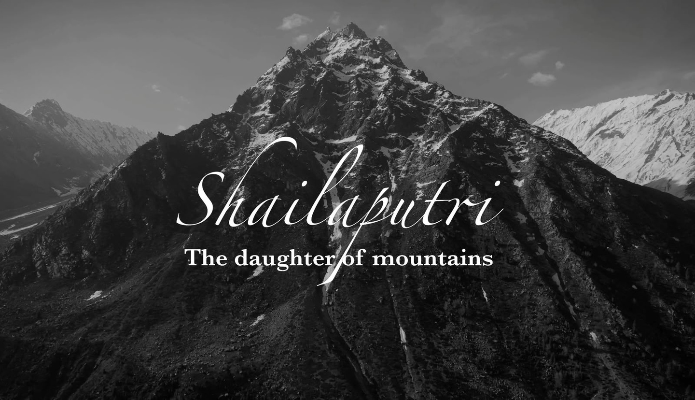
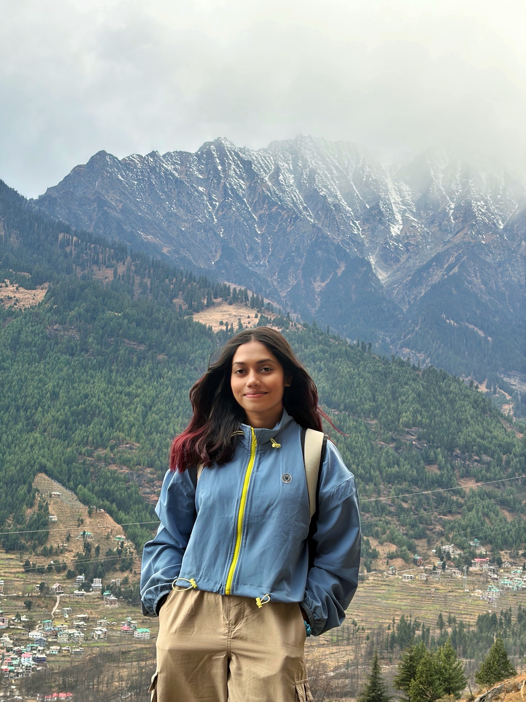
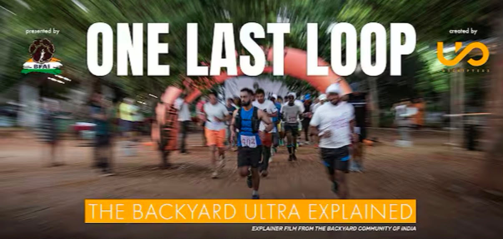
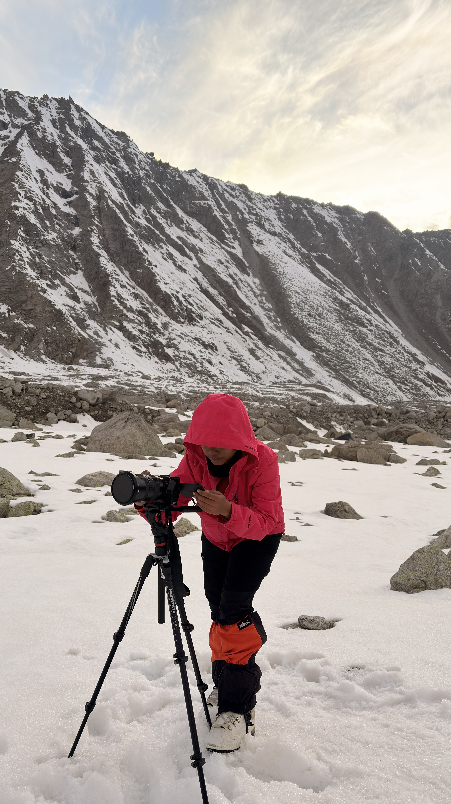
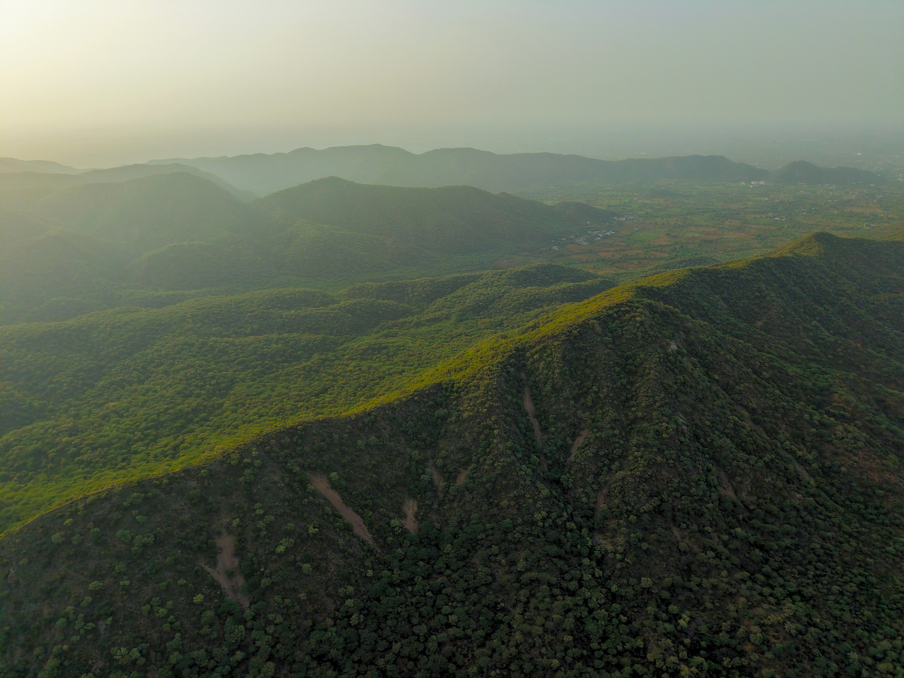
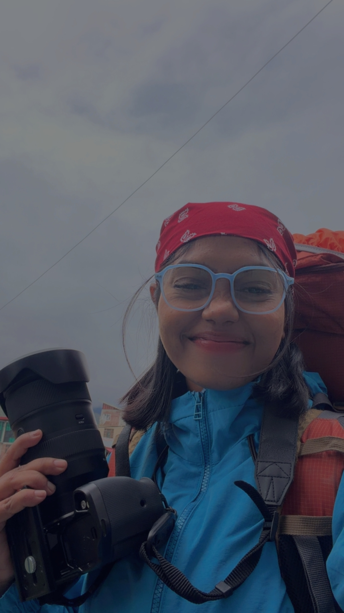

Mount Tharang II · 1st Ascent
Shailaputri: The Daughter of Mountains
A 45-minute black-and-white expedition documentary capturing the grit, solitude, and triumph of the Indian 1st ascent of Mount Tharang II.
A filmmaker shaped by moments and emotion. Driven by stories of people, places, and purpose — from filming over 6,000 meters in the Himalayas to high-tension endurance races, documentaries, and commercial productions.

Himalayan Sanctuary · Moments & Emotion
A curated collection of documentaries, mountaineering expeditions, endurance races, and visual stories created across outdoor, sports, and branded productions.

A 45-minute black-and-white expedition documentary capturing the grit, solitude, and triumph of the Indian 1st ascent of Mount Tharang II.

Demystifying the relentless psychology of the Backyard Ultra endurance format for India’s ultrarunning community.

Sub-zero expedition cinematography documenting human resilience on the highest peaks of the Himalayas.

Expansive aerial perspectives capturing untouched geological horizons and natural lighting gradients.

I'm a filmmaker and visual storyteller driven by stories of people, places, and purpose. My work spans documentaries, mountaineering expeditions, endurance races, outdoor adventures, podcasts, fashion campaigns, corporate films, product commercials, and branded content.
From filming at over 6,000 meters in the Himalayas to producing podcasts, fashion campaigns, and commercial productions for brands, I enjoy creating films that are authentic, immersive, and emotionally engaging. Every project is an opportunity to transform ideas into compelling visual narratives that leave a lasting impact.
4 years as a Freelance Video Editor, followed by 1 year as Senior Editor at The Unscripted India.
Strong eye for composition, natural lighting, and capturing cinematic aerial perspectives across remote terrain.
Comfortable leading productions in challenging environments with small, agile teams from script to delivery.
The grounding that shapes every creative decision behind the lens and across the timeline.
Bachelor of Science (B.Sc.) in Geography
Barasat Govt College.
Hands-on filmmaking and cinematography experience across diverse documentary and commercial productions.
Filmmaking has taught me to observe before I capture. My geography background enriches how I read terrain, weather, and light — strengthening my ability to tell authentic stories with purpose and emotion.
"I believe every person, place, and brand has a story worth telling. My goal is to create films that are honest, cinematic, and emotionally engaging stories that people remember long after the screen goes dark."
Inspired by travel, human resilience, cultural heritage, and observational documentary storytelling. Drawn from real-life experiences, meaningful conversations, and everyday beauty.
Over 4 years of experience directing and editing short films, documentaries, and brand stories + 1 year as Senior Editor at The Unscripted India.
Director · Cinematographer · Editor · Drone Operator · Creative Producer across documentaries and commercial sets.
Comfortable leading productions in remote, challenging environments with small agile crews. Always eager to explore new places, cultures, and creative collaborations.
We transform ideas into compelling visual stories through strategy, creativity, and cinematic execution.
Defining the emotional core, researching the narrative arc, visual treatments, and meticulous production planning.
Cinematic capture in any terrain, high-altitude alpine rigs, 4K 10-bit log profiles, aerial drone piloting, and on-location sound.
Intentional narrative assembly, rhythm cutting, sound immersion & foley, and DaVinci Resolve node-based color grading.
Festival master deliverables (IMF, cinema formats), high-impact short-form cutdowns for social, and commercial broadcast exports.
Every great story begins with a conversation. Whether you're creating a documentary, launching a brand, producing a commercial, or building something from the ground up, I'd love to help bring your ideas to life through meaningful and cinematic storytelling. Let's create work that inspires, connects, and leaves a lasting impact.